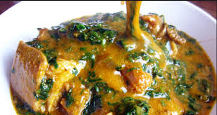

Ogbono Soup

Ogbono, This is a classic Igbo Delicacy
prepared with Ogbono seeds, Okra, dry pepper, vegetable, dry fish, meat
and enjoyed with any desired Swallow.
How to make native Ogbono soup
Get the underlisted items :
- Ogbono seeds or Ogbono Powder
- Leafy Vegetable (Preferably Ugwu Leaves)
- Okra (Okro)
- Dry grounded Pepper (Black Pepper)
- Onions
- Palm Oil
- Locust beans (Iru)
- Fresh Beef and assorted meat (Cut to desired sizes)
- Dry Fish (Stock fish, Panla, Apo..etc)
- White Crayfish
- Red Crayfish
- Cowhide (Ponmo)
- Salt (to taste)
- Seasoning
Follow these steps carefully to achieve the desired results
- Wash your vegetable and put in a sieve to drain
- Cut you beef, stockfish, assorted meat parts into a pot. Add salt,
seasoning, onions to it and boil with water until very tender.
- Seperate your stock from your meat using a sieve and put it
aside (you need the stock to prepare the soup)
- Also boil the cowhide with salt and turn away the water,
rinse your crayfish and drain
- Blend your Ogbono seeds with white crayfish
(for extra delicious taste)
- In a medium sized pan, and at low heat, add your Palm Oil and add
freshly diced onions, stir until soft but don't burn
- Add your finely blended Ogbono and keep stirring till an
even consistency is achieved and no trace of palm oil is seen.
- Add your stock gradually until you achieve your desired thickness
- Add locust beans, dry pepper and allow to simmer.
- Add your meat, stockfish, ponmo, dryfish, red crayfish
- Add your vegetable and leave to slightly boil
- Now add your okro and allow to simmer for few minutes
without covering your pot then turn off the heat
- Serve and enjoy with your favourite Swallow
: (Eba, Poundo or Cemo)
Back to the top
Back to Homepage